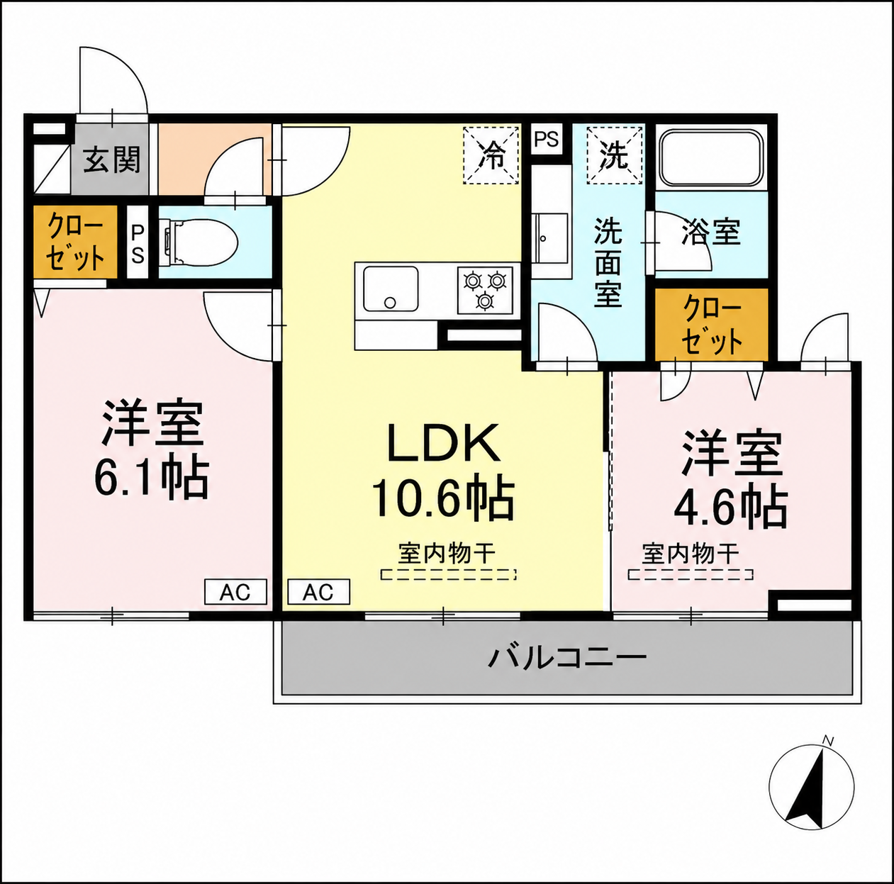

間取り家具レイアウト
すべてたたむ
すべて開く
① 実寸（大きさ）合わせ
洋室6.1の左壁＝360cm を基準に、毎回自動で正しい縮尺に設定されます（通常は触らなくてOK）。
2点クリックで実寸を取り直す
実寸(cm)
または倍率
cm/px
倍率: -
② 家具を追加
＋ 配置する
追加した家具はドラッグで移動。同じ家具を何個でも追加できます。家具の▼マークが「正面の向き」です（回転すると一緒に回ります）。
＋ 家具の種類を作る
作った種類は保存され、いつでも・別のプランでも追加できます（相手にも同期）。
③ 選択中の家具
名前
幅 W(cm)
奥行 D(cm)
高さ H(cm)
3Dでの高さ
比率を保ったまま大きさを変える
角度
度
⟲90
⟳90
−1
＋1
形
四角
角丸
円・楕円
半円
L字
角の丸み
cm
置く高さ
cm（棚・机の上に置くとき）
色
つや
-
クッション
左2つ / 右1つ
絵
画像ファイルを選ぶ
モニター
なし
1台
2台（デュアル）
キーボードとマウスを置く
椅子を引くスペースを判定
引く向き
手前（D方向）
奥
左
右
必要奥行
cm
-
⧉ 複製
🗑 削除
④ プラン（自動保存）
現在のプラン:
未設定
＋ 新しいプランを作る
今の配置に名前を付ける
💾 今すぐ保存
▦ 並べて比較する
名前を決めると、以降の変更は自動で保存されます。
3Dで歩いてみる
🏠 3Dプレビュー（中を歩く）
今の家具配置をそのまま3Dの部屋にして、一人称視点で中を歩き回れます。ドアの開け閉め・天井の高さ変更もできます（PC推奨）。
⑤ 全体
グリッド(50cm)
帖の文字を隠す（文字なし背景）
マウスのホイールで拡大・縮小できます（カーソル位置中心）。中ボタンドラッグで移動。
全家具をクリア
⑥ 3Dの内装
壁の色
全部の壁・天井
ドアの色
全部のドア・枠
色・床を元に戻す
部屋ごとの床
窓の飾り（バルコニーの掃き出し窓はカーテンのみ）
⑦ 共有（リアルタイム）
オフライン
ルームID
このルームに接続
共有URLをコピー
同じURL（＝同じルームID）を相手に送ると、配置・プランがリアルタイムで同期されます。先にFirebaseの設定が必要です（下の手順参照）。
−
100%
＋
重なり: -

← 1画面に戻る
プラン比較
表示サイズ
カードをクリックで編集対象を選択 → 左サイドバーで追加・回転・サイズ変更
← 2Dに戻る
⇔ 2画面
天井の高さ
240cm
目線の高さ
150cm
視野角
70°
画面比
自由（いっぱい）
16:9
16:10
3:2
4:3
1:1
3:4（縦）
9:16（縦）
WASD: 移動｜矢印キー・マウス: 見回す｜E/クリック: ドアの開閉・座る｜Shift: 走る｜M: 上空から見る｜Esc: カーソルを出す
クリックするとマウスで見回せます
クリックしなくても、矢印キーで見回し・WASDキーで移動できます
3Dモデルを生成中…（初回はライブラリの読み込みに数秒かかります）
家具の種類を作る
名前
幅 W(cm)
奥行 D(cm)
高さ H(cm)
0で自動（3Dでの高さ）
色
形
四角（角丸）
角丸（丸み調整）
円・楕円
半円（片側だけ円）
L字
角の丸み
cm
平らな側
下
上
左
右
丸み開始まで
cm（大きいほど直線が長く・丸みが浅く）
欠ける角
右上
左上
右下
左下
欠け 幅
cm
欠け 奥行
cm
椅子を引くスペースを判定する家具
保存
削除
キャンセル